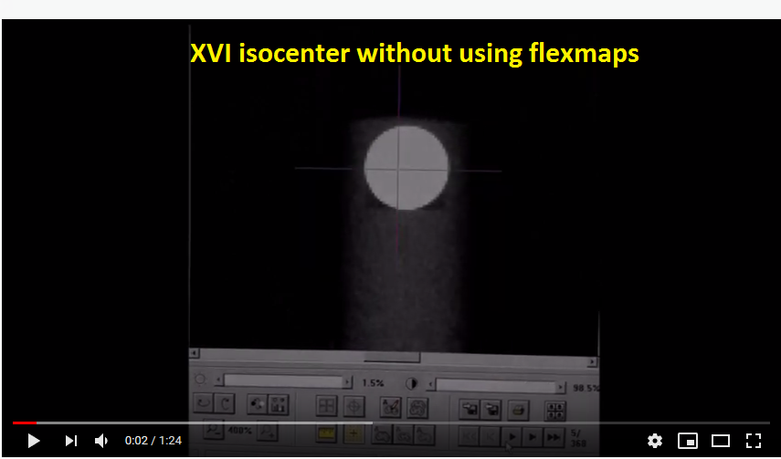
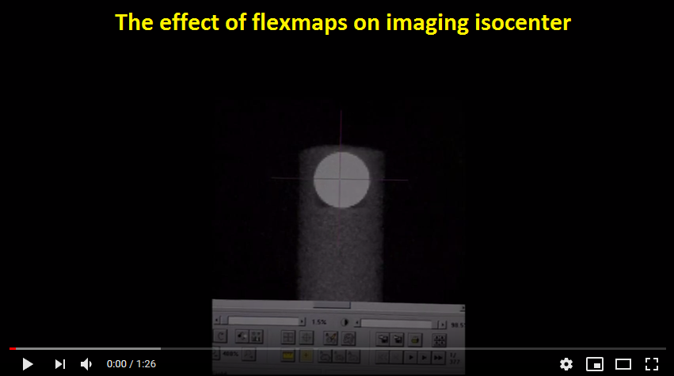

XVI flexmap testing and calibration¶
I think there are just two fundamental measurements that you have to do after every XVI maintenance. One is with the BB to measure the kV and MV isocenter coincidence, both 2D and 3D. And the other is with the Catphan to measure image geometric scaling.
In 2019, Elekta still hasn’t got any CAT for MFOV and LFOV, and after regular maintenance the image quality and geometric scaling for MFOV and LFOV is suboptimal. It could be that Elekta will fix its Flexmap calibration software that is currently causing the problem, so I cannot guarantee you will see the same errors that I am seeing, but the philosophy still stands.
What is a flexmap?¶
A flexmap is a vector function of gantry angle that specifies the position of the MV isocenter on the kV image. All flexmaps are contained in the XVI/Calimg/FlexMap folder on the XVI workstation. There is one flexmap file for each FOV and direction of rotation. You have extra three average flexmaps that are used for planar imaging. The reason for this is that CC and CW gantry rotations have different flexmaps, and to have a more accurate single image acquisition where the direction of gantry rotation is arbitrary, it is best to make an average of the two flexmaps.
The flexmap vector (x, y) lies in the detector plane. Its components x and y are the lateral and longitudinal displacements of the MV isocenter with respect to the detector center. For SFOV, x and y should oscillate around 0. For MFOV, the x component should have an offset of about 115 mm. And for LFOV, about 190 mm. Image below shows an example flexmap for MFOV and CC rotation of the gantry.
{kind=link}
An example flexmap for MFOV, CC rotation. The first column is the gantry angle. The second and third columns are flexmap coordinates of the average MV isocenter as seen by the kV beam. The coordinates lie in the detector plane. The plot on the right is a parametric plot that demonstrates the movement of the MV isocenter as seen from the perspective of the detector plate.¶
Note
If you change the flexmap files, this effect will show up once you repeat the CBCT scan. It will not show up during reconstruction.
Why are flexmaps needed?¶
Flexmaps are needed for superior image reconstruction, that is quality and geometric accuracy. When you acquire a CBCT scan, both the detector plate and the source will juggle and move around slightly. Because of this movement, the MV isocenter is not at the same position on the kV projection image for each gantry angle. XVI applies the flexmap to each projection image, hence all the movements of the detector/source during gantry rotation are taken into account so that, in theory, whatever gantry angle the image was taken at, the displayed “center” on the image will accurately correspond to the true MV isocenter. Since flexmaps are just single point transformations, potential skewing around the central point is not recorded. This means that if you have a mechanical problem like a loose detector plate causing unusual image rotation, flexmaps will not remedy the problem.
Below you have a simple 3D image of the BB. One was acquired by using flexmaps, and the other without using flexmaps. You can see on the one without flexmap applied, how this juggling spreads out or smears the image of the BB. Particularly in the longitudinal direction, since in this direction the detector plate moves the most (the same with iViewGT).
{kind=link}
An example 3D image of the BB. On the left with using flexmaps and on the right without using flexmap. Note that longitudinal distortions are greater than lateral. That is because XVI detector plate moves more in the longitudinal direction.¶
To demonstrate what is going on while gantry rotates around the BB, see these two videos on YouTube (click on them). I positioned the BB exactly into the average 6 MV isocenter, and then acquired a CBCT scan. What you are seeing is the movement of the recorded MV isocenter on projection images while the gantry rotates. Ideally, the purple cross should be exactly in the center of the BB for all gantry angles.
 When you do the flexmap calibration, you are teaching XVI the position of the MV isocenter for each gantry angle. The calibration goes something like this. First, you put the BB exactly into the average MV isocenter (WL test with minimalistic gantry/collimator sequence). Then you acquire a CBCT scan for each FOV and direction of gantry rotation. The software will detect the center of the BB on each acquired kV projection, and project the coordinates to the detector plane, and then save them to a file.
From time to time one must test whether XVI still remembers this position with sufficient accuracy. It is also vital to do tests right after flexmap calibration. You will see that the calibration itself can result in an inferior image quality. Let me show you how to catch that.
Catching flexmap errors¶
Note
It is possible that by now Elekta has fixed the flexmap calibration procedure, so part of what you will read here may be obsolete.
We will start with the Ballbearing phantom. Position the BB into the average isocenter of the 6 MV beam. Acquire the usual 8 images, get the shifts and apply them with micrometer screws. Repeat the procedure until the BB is in perfect position (zero shifts).
Once the BB is in position, it’s time to acquire CBCT scans. One scan for each FOV and for each direction of gantry rotation. That is, 6 scans altogether. You can use FlexMap VolumeView presets, but at the end use a better reconstruction preset.
Note
For better BB reconstruction you can shrink the reconstruction window and increase the resolution. Change the reconstruction voxel size to, say, 0.5 mm or 1 mm. ReconstructionDataType should be set to float, and ProjectionDownSizeFactor should be set to 1.
For each scan check:
how well XVI registers the MV isocenter on projection images, and
the quality of 3D images of the BB and corresponding positional errors.
What should you see? Well, normally, right after calibration, you will end up with perfect or almost perfect results for SFOV, and not so good results for MFOV and LFOV. See the image below. For SFOV, the BB looks nice and round in 3D, and the isocenter is “more or less” in the center of the BB on all projection images. For MFOV and LFOV, the BB is smeared in the lateral directions, the isocenter is constantly on “the left” side of the BB for all gantry angles. Because the BB is smeared, it is hard to register the 3D image with the reference.
{kind=link}
The isocenter as displayed on 2D image for a particular gantry angle (this case -90). Note that with increasing FOV the isocenter shifts to the “left”.¶
{kind=link}
What is going on here? I do not know, to be honest. There are articles you can read that tell you that there is a problem with how the flexmap coordinates are projected from the detector plane to the isocenter. And that you should adjust the SDD distance for better projection, among other things. It is evident that the problem is not complex, but is integrated into the system.
Putting the results in a nutshell: for SFOV everything seems fine, that is, the isocenter is well positioned for planar imaging, and the 3D image shows a nice round BB with almost zero positional error. For MFOV and LFOV the isocenter is not good if one is to do planar imaging because it is shifted “to the left” on every projection. This error amounts to 1 mm for MFOV and 1.5 mm for LFOV. The 3D image of the BB is not nice and round, and the positional error is impossible to evaluate accurately.
You may be wondering whether this shows up on other tests. It does! And you can use QAserver to detect the issue in a matter of minutes. Here it goes.
Effect of faulty flexmaps on geometric scaling¶
Put the Catphan on the couch so that it hangs over the table top. Scan the phantom in all three FOVs. You should create a nice preset similar to CAT Geometric. Use F1 filter for MFOV and LFOV, 120 kV and 20 mA/20 ms per frame. The reconstruction preset should be better than clinical. The phantom should be in the center of the image so that all CTP modules are withing the image.
Analyze the image with QAserver/Pylinac. Image below shows some results. Because MFOV and LFOV have bad flexmaps, the geometry is not withing specs. Elekta’s specification is 117 mm +- 1 mm for the distance between air-air plugs and Delrin-LDPE plugs. Which is about 50 mm +- 0.5 mm for the usual distance between standard geometric markers. Longitudinal measurements will be perfectly accurate, so no need to worry about that.
Below are example images of Catphan 503.
{kind=link}
Fixing the flexmaps¶
The solution for better image quality and geometric scaling is to slightly shift XVI’s isocenter laterally. Your service engineer can easily do this right after flexmap calibration by displacing the detector plate. Another option is to leave the detector plate where it is, but shift the x column of the flexmap files to bring the isocenter to the center of the BB. Figure below shows how the MFOV image improves by applying 0, 0.5 mm and 1 mm shifts to the detector plate (or to flexmap x column).
{kind=link}
Shifting the MFOV isocenter laterally to bring it closer to the BB center. By doing so the image quality improves, and so does the geometric scaling.¶
Warning
There are other thing to consider as well. Setting the source and the detector plate accurately is an important step to ensure good image quality. If the kV beam is not going straight through the isocenter, then you will get really bad images.
Another thing. There is a specified tolerance for detector lateral position. Make sure you check image accuracy when the detector is on the edge of this tolerance interval for a specific FOV. On both ends of the interval you should be getting an acceptable image quality, otherwise the interval is too broad.